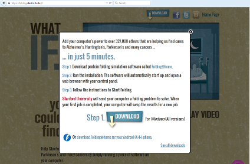
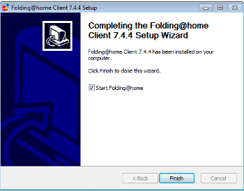
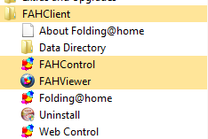
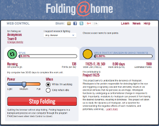
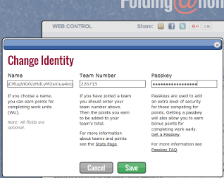
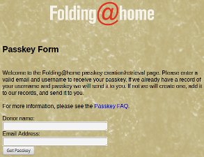

Folding is so much easier than mining. We are going to show you how to download the Folding @ Home client from Stanford University, install it, and configure it.
Installing Folding @ Home is easy. First you go to http://folding.stanford.edu and click the "download" button on the top. For Windows, there is only one installer to choose from, so click "download" again.
Run the installer you downloaded and you'll find nothing uncommon from other installers. You agree to the terms of service and pretty much click "next" several times. At the end, it saves some hassle if you leave "Start Folding@home" checked at the very end of the installer.
Folding @ Home is a service, which is a program that runs in the background with nothing to look at. It has 2 different ways to configure it, the easy web configuration and the more advanced FAHControl program. If you look in your start menu you'll have the "FAHClient" start group with the following items.
If you didn't leave "Start Folding@home" checked earlier, you will have to click "Folding@home" to start it before you can configure it.
For detailed information on installing Folding @ Home, see Stanford's Windows Install Guide
We'll get you started with the easy web interface. When you click "Web Control". When you run the Web Control it will open https://folding.stanford.edu/client in your browser. This runs JavaScript locally that connects to your Folding@home. The fist time you open it, it will look like this.
Stanford starts you out folding anonymously for the default team #0. Here is where you will need to get your Dogecoin wallet address that you want paid to ready. Click "Change Identity" in the top left just below where it says "Anonymous/Team 0". The Change Identity box will popup. Here you will need to enter your wallet address in the "Name" box. Be careful to not miss any letters or have a space at the beginning or end of your wallet address. Dogecoinfah's automated system will not pay to invalid wallet addresses, you may be skipped! Enter the Dogefolders team number 226715 in the "Team Number" box. We suggestion you click "Get a Passkey" and enter it in the "Passkey" box once finished (see next section for more information).
Registering for a passkey is not required, but you get bonus points when folding if you have one. A passkey prevents other people from being able to fold towards your folding name. To register for a passkey, you click the button when configuring your identity or simply go to the Stanford Passkey Registration Page. You enter your folding name, which should be your Dogecoin wallet address, your email address, and click the "Get Passkey" button. A passkey will be emailed to you. Enter the passkey into your Identity Configuration and enjoy bonus points. For more information, see Stanford's Passkey FAQ Page.
For information on how to configure Folding @ Home with the FAHControl Advanced Control application or to configure folding with a graphics card, please see the the Linux Install Documentation's Configure section.
After you've configured your identity, Folding @ Home will continue working in the back ground. You can close the web control and forget about it. That's all there is to it!